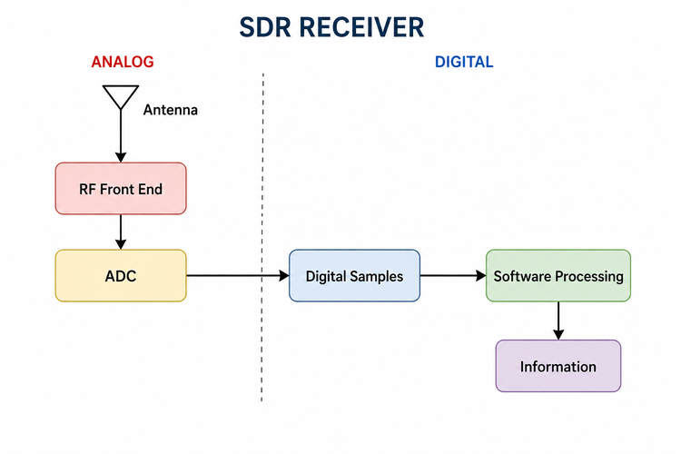
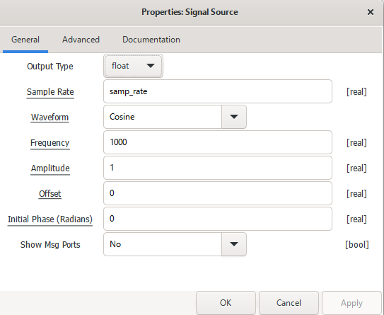
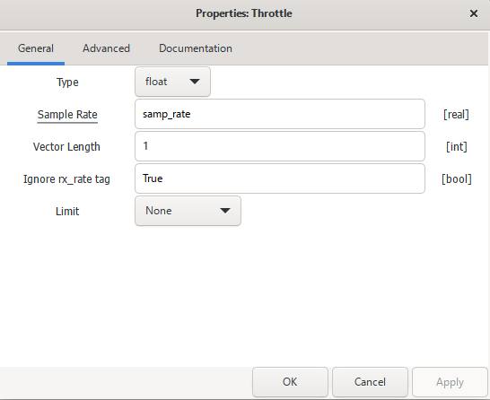
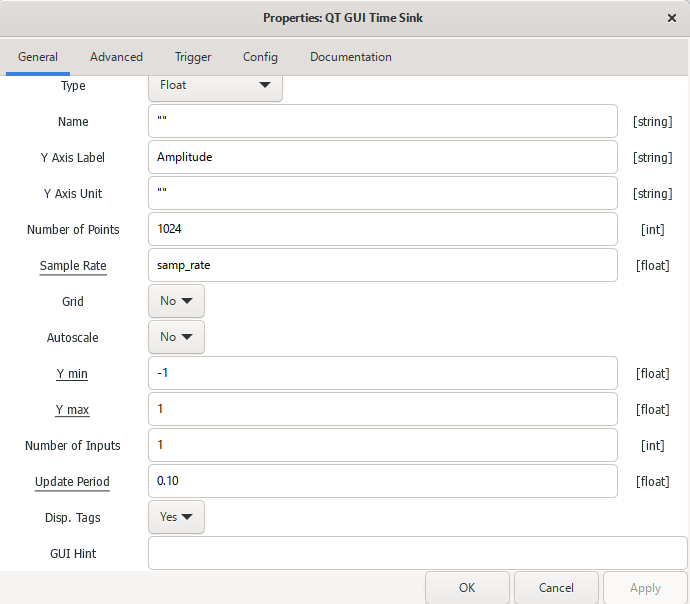
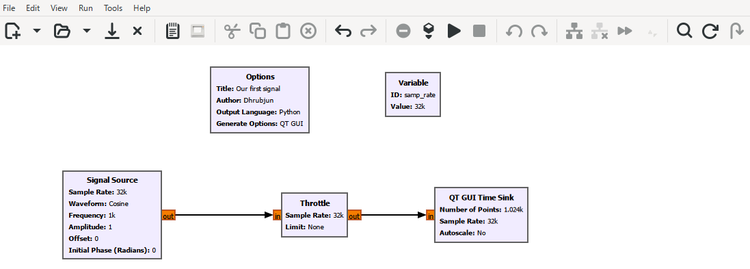
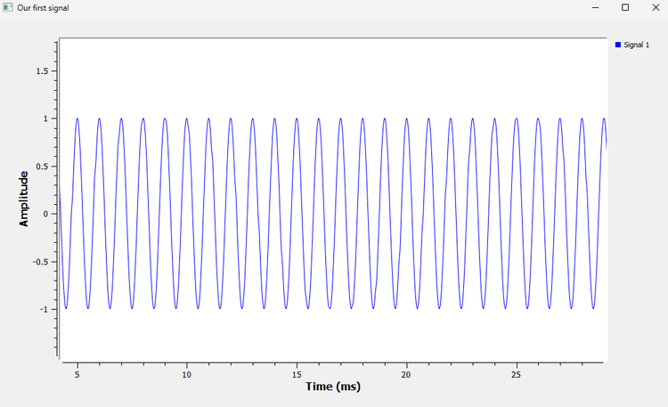

Chapter 1: What Is Software Defined Radio?
1.1 What Does a Radio Actually Do?
Before talking about Software Defined Radio, let us forget the word software for a moment and start with a simpler question:
What does a radio actually do?
Suppose we want to listen to an FM radio station. The antenna is not receiving only that station. Many electromagnetic signals may be reaching it at the same time: other FM stations, mobile networks, Wi-Fi, Bluetooth, satellite signals and more.
Yet when we tune the radio, we hear the station we selected.
Somewhere inside the receiver, a sequence of operations separates the signal we want from everything else and recovers the information carried by it.
At a high level, the process is simple: receive the signal, select the part we want, suppress what we do not want, and recover the information.
A real receiver is more complicated than this, but even this simple picture tells us something important: a radio is essentially a chain of operations performed on a signal.
With Software Defined Radio, many of those operations are still needed. What changes is where and how we perform them.
1.2 The Traditional Way of Building a Radio
Traditionally, many radio operations have been carried out using dedicated electronic circuits.
A receiver might contain amplifiers, filters, mixers, oscillators and demodulators, with each part designed to perform a particular job.
A very simplified receiver chain might look like this:
Antenna → RF Amplifier → Analog Filter → Mixer → Another Filter → Demodulator → Audio
There is nothing inherently wrong with this approach. In fact, as we will soon see, SDR does not make analog hardware disappear.
The important difference is flexibility.
If part of a radio has been built specifically to process one kind of signal, changing the radio’s behaviour may require modifying or replacing some of that hardware.
Now imagine moving some of those operations into digital processing controlled by software.
Instead of changing a circuit, we may be able to change an algorithm or a set of parameters.
That is the central idea behind Software Defined Radio.
1.3 So What Is Software Defined Radio?
A Software Defined Radio, usually shortened to SDR, is a radio in which many signal-processing functions that could otherwise be implemented in dedicated hardware are performed digitally and controlled through software.
A simplified SDR receiver can be described by the following signal path:
Antenna → RF Front End → ADC → Digital Samples → Software Processing → Information
The ADC, or Analog-to-Digital Converter, marks an important boundary.
Before the ADC, the receiver is working with an analog electrical signal. Depending on the radio architecture, the RF front end may already have amplified, filtered or frequency-translated that signal.
After the ADC, the signal is represented by a sequence of numbers called samples.
Once the signal is represented numerically, we can process it digitally. That processing can include filtering, frequency translation, demodulation, synchronization, decoding and signal detection.
We will encounter all of these later in the book. For now, the main idea is simpler:
In SDR, much of what the radio does to a signal can be implemented or controlled through digital processing and software.
1.4 Does “Software Defined” Mean There Is No Hardware?
No. An SDR is still a physical radio system, and it still needs hardware.
We cannot connect an antenna directly to a Python program and expect the computer to receive a 2.4 GHz Wi-Fi signal.
The signal arriving at an antenna is a physical electromagnetic signal. Before software can process it, hardware must receive it, condition it and convert it into digital samples.
The basic idea is shown below.

Notice the boundary between the analog and digital sides.
The antenna and RF front end are on the analog side. Depending on the radio, the RF front end may contain amplifiers, filters, mixers, oscillators and gain-control circuits.
The ADC then converts the conditioned analog signal into digital samples. From that point onward, much of the remaining processing can be performed digitally.
Later in the book, we will connect actual SDR hardware and see this boundary for ourselves.
For now, however, we do not need an antenna or an SDR device at all. GNU Radio can generate signals directly inside the computer, giving us a controlled environment in which to learn what happens to them.
1.5 What About a Transmitter?
So far we have looked at a receiver, but the same idea works in the other direction.
A simplified SDR transmitter can be described as:
Information → Digital Signal Processing → Digital Samples → DAC → RF Front End → Antenna
Here, DAC means Digital-to-Analog Converter.
The DAC converts digitally generated samples into an analog electrical signal. The RF hardware can then filter, amplify or frequency-translate that signal as needed before transmission.
A compact way to remember the two directions is:
- Receiver: Analog Signal → ADC → Digital Samples → Software
- Transmitter: Software → Digital Samples → DAC → Analog Signal
We will spend a large part of this book working on the digital portion in the middle. It is worth remembering, however, that those numbers ultimately represent real signals entering or leaving real hardware.
1.6 Why Is SDR So Useful?
The attraction of SDR becomes clearer when we think about flexibility.
Suppose we want to experiment with FM today, a digital modulation scheme tomorrow and a packet receiver next week. If every signal-processing operation were permanently fixed in hardware, making those changes could be difficult.
With SDR, much of the radio’s behaviour can be changed in software.
The same general SDR platform can therefore be used for many different purposes, including:
- broadcast radio experiments
- digital communication
- satellite reception
- spectrum monitoring
- packet communication
- radar experiments
- wireless research
This does not mean that software can do anything we want. The hardware still sets practical limits such as the frequencies we can receive or transmit, the instantaneous bandwidth available to us and the system’s dynamic range.
Within those limits, however, SDR gives us considerable flexibility.
For learning, there is another advantage. We do not have to read about a filter and simply trust that it behaves a certain way. We can build one, send a signal through it, change its settings and observe the result immediately.
That experimental approach will guide the rest of this book.
1.7 Where Does GNU Radio Fit?
GNU Radio is a signal-processing framework that lets us build systems by connecting processing blocks together.
Using GNU Radio Companion, or GRC, we can build these systems graphically. The resulting diagram is called a flowgraph.
For our first experiment, the signal path is very simple:
Signal Source → Throttle → QT GUI Time Sink
The Signal Source will generate a signal. Throttle will limit the rate at which samples are processed in this software-only flowgraph. The QT GUI Time Sink will display those samples against time.
The connections between the blocks show the direction in which the sample stream travels.
One habit will help us throughout the book. Whenever we look at a GNU Radio block, we should ask two questions:
What does the signal look like before this block?
and
What has this block changed?
If we can answer those questions, even a complicated flowgraph becomes much easier to understand.
1.8 Our First Signal
We need a signal to experiment with, so we will begin with one of the simplest and most useful signals in signal processing: a sinusoid.
A sinusoidal signal can be written as:
\[ x(t)=A\cos(2\pi ft+\phi) \]
If that equation looks unfamiliar, do not worry. We are not going to derive anything from it yet.
For the moment, notice only a few things:
- amplitude tells us how large the signal is,
- frequency tells us how quickly it repeats,
- phase tells us where the signal is within its cycle.
Here, t represents time. We will unpack the rest of the equation properly in the next chapter.
For our first experiment, we will use:
Amplitude = 1
Frequency = 1 kHzOur goal is simple: ask GNU Radio to generate this signal and display it.
1.9 Experiment 1: Build Our First GNU Radio Flowgraph
Open GNU Radio Companion and create a new flowgraph.
Before adding the signal-processing blocks, we need one variable.
Create the Sample-Rate Variable
Search for a Variable block and add it to the flowgraph.
Set:
ID: samp_rate
Value: 32000GNU Radio will display 32000 as 32k on the flowgraph. It is simply using compact engineering notation.
We may naturally wonder why we chose 32,000, or what a sample rate means in the first place. For now, we only need the value. We will study sampling properly in a later chapter.
Add the Signal Source
Search for Signal Source and add it to the flowgraph.
Open its properties and configure it as shown below.

We have asked the block to generate a cosine with a frequency of 1000 Hz and an amplitude of 1.
Notice that we have not typed 32000 directly into the Sample Rate field. Instead, we use:
samp_rateThis refers to the variable we created earlier. If we later change samp_rate, every block that uses the same variable can follow that change.
There are other settings in the window, such as Offset, Initial Phase and Show Msg Ports. We do not need them yet. We will introduce those options when they become useful.
Add the Throttle
Next, search for Throttle and add it to the flowgraph.
Set its type to Float and its sample rate to samp_rate, as shown below.

Leave the remaining settings as shown.
The purpose of Throttle may not be obvious at first. Why should a signal that exists only inside the computer need a rate limit?
We will answer that after the flowgraph is running.
Add the QT GUI Time Sink
Finally, add a QT GUI Time Sink and configure it as shown below.

For this experiment, the settings that matter most are:
Type: Float
Number of Points: 1024
Sample Rate: samp_rateThe Time Sink contains many other options, including Grid, Autoscale, Trigger, Update Period and GUI Hint. We can ignore them for now. We will return to those settings when we have a reason to use them.
Connect the Blocks
Connect the three processing blocks in this order:
Signal Source → Throttle → QT GUI Time Sink
The completed flowgraph should look like this:

Take a moment to read the flowgraph before running it.
The Signal Source shows Frequency: 1k.
The Variable shows Value: 32k.
The Time Sink shows Number of Points: 1.024k.
GNU Radio often uses prefixes such as k to keep values compact. Here, 1k means 1000 and 32k means 32000.
More importantly, we should start reading the flowgraph from left to right. In this case, the chain is doing three things: generating a cosine, controlling the processing rate and displaying the samples.
This is the beginning of learning to read GNU Radio flowgraphs as signal-processing systems rather than as collections of blocks.
1.10 Before We Press Run
Before running the flowgraph, let us make a prediction.
We told GNU Radio to generate a cosine with an amplitude of 1 and a frequency of 1 kHz.
What should we expect the Time Sink to show?
We do not need to calculate anything yet. It is enough to form a picture in our minds, then run the flowgraph.
1.11 Observing the Result
We should see something like this:

There is our first signal.
The waveform moves between approximately +1 and -1, which agrees with the amplitude entered in the Signal Source. It also repeats regularly across the time axis.
Even this simple plot raises several useful questions:
- How long does one cycle take?
- How many cycles occur in one second?
- Why does the curve look smooth if GNU Radio is processing individual samples?
- How many samples are used to represent each cycle?
We do not need to answer all of them yet. The point is simply to notice that a simple cosine already gives us several things to investigate.
What have we actually done? We started with the mathematical description
\[ x(t)=A\cos(2\pi ft+\phi) \]
and asked GNU Radio to generate numerical samples representing that signal. The Time Sink then displayed those samples in the time domain.
That same basic idea, generate or receive samples, process them and observe the result, will remain with us as the systems become more complicated.
1.12 GNU Radio Toolbox
Throughout this book, we will keep a running GNU Radio Toolbox.
The goal is not to list every property of every GNU Radio block. When we meet a useful block or feature, we will learn the part that matters for the experiment at hand. As the same blocks appear again, we will gradually learn more about them.
Signal Source
The Signal Source generates a known sequence of samples inside GNU Radio.
In our first experiment, it generates a 1 kHz cosine. Later, we will change its frequency, amplitude, phase and waveform, and we will also use it with complex signals.
It is particularly useful for learning because we know exactly what signal we are putting into the flowgraph.
One distinction is worth making immediately:
Signal Source generates digital samples inside GNU Radio. It does not produce a physical RF signal at an antenna connector.
That difference will become clearer when we study sampling and SDR hardware.
Throttle
Throttle is unusual because it does not perform the kind of signal-processing operation we normally associate with a radio.
Our current flowgraph exists entirely inside the computer. There is no SDR device, sound card or other hardware source or sink forcing the stream to run at a real-world sample rate.
Without a rate-limiting block, GNU Radio can process samples as quickly as the computer and the rest of the flowgraph allow. Throttle limits the average processing rate to approximately the sample rate we specify, which keeps a software-only simulation from running unnecessarily fast.
A useful rule for now is:
In a software-only flowgraph with no hardware block providing the timing, a Throttle block is often needed.
When real hardware provides the sample timing, we generally do not add Throttle to the same streaming path.
Also remember that Throttle is not an ADC and does not create the samples. By the time the data reaches it, the signal is already represented digitally.
QT GUI Time Sink
The QT GUI Time Sink lets us inspect samples in the time domain.
In this experiment, it showed the shape and amplitude of our cosine. Later, we will use it to compare signals, observe delays, inspect distortion and watch what happens when different parts of a flowgraph are changed.
Time is only one way to look at a signal. Later, we will also look at signals in the frequency domain.
1.13 A Small Detail That Will Matter Later: Data Types
Look again at the ports connecting the blocks in the flowgraph.
We may have noticed that GNU Radio uses colours for them. Those colours help indicate the type of data travelling through each connection.
In our first experiment, we selected:
Floatfor the Signal Source, Throttle and Time Sink.
We are not going to study GNU Radio data types in detail yet, but remember one simple rule:
Blocks connected together must use compatible data types at their connected ports.
This gives us a good opportunity to deliberately break our first flowgraph.
1.14 Experiment 2: Break the Flowgraph on Purpose
Getting a flowgraph to work is useful. Breaking it on purpose can teach us something different.
Create a Type Mismatch
Stop the flowgraph and open the Signal Source properties.
Change:
Output Type: Floatto:
Output Type: ComplexLeave the Throttle set to Float.
Now look at the connection between the two blocks and try to run or reconnect the flowgraph.
GNU Radio should indicate that the two ports are not compatible.
We have not learned what complex samples are yet, so we do not need to worry about why Float and Complex are different. That comes later. The lesson here is simply that the data produced by one block must be compatible with the data expected by the next.
When we are finished, change the Signal Source back to Float.
Remove Throttle
Restore the working flowgraph.
Now remove the Throttle block and connect:
Signal Source → QT GUI Time Sink
Run the flowgraph again.
The flowgraph may still run. Without Throttle, however, there is no block in this simple chain intentionally limiting the sample-processing rate to samp_rate. GNU Radio can therefore process samples as quickly as the computer and the downstream block allow. Depending on the system, we may notice higher CPU usage or less predictable GUI behaviour.
This tells us something important about Throttle. The cosine does not mathematically require it. We use it because this experiment has no real hardware setting the sample timing.
Stop the flowgraph and put Throttle back.
We will return to the meaning of sample rate when we study sampling in detail.
1.15 A Flowgraph Can Be Wrong Without Crashing
Sometimes GNU Radio makes a problem obvious. Two ports may be incompatible, a parameter may be invalid, or the flowgraph may refuse to start.
Those problems are relatively easy to find because the software tells us something is wrong.
Later, we will meet a more subtle kind of mistake: a flowgraph can run perfectly and still produce the wrong signal-processing result.
GNU Radio cannot always know what result we intended. A poor parameter choice or an incorrectly designed processing chain may still be perfectly valid software.
That is why we will keep using the same habit throughout the book: predict, run, observe and explain.
Quite often we will also break a working system, observe what changed and work out why.
This is more useful than simply memorizing which blocks should be connected together.
1.16 Explore Further
Before closing the flowgraph, let us experiment with it for a few minutes.
Start by changing the Signal Source frequency from:
1000to:
2000Run the flowgraph again. What changed in the Time Sink?
Now return the frequency to 1000 and change the amplitude:
Amplitude = 0.5What changed this time?
Try:
Amplitude = 2Then try changing the Offset.
Finally, return the other settings to their original values and change:
Waveform: Cosineto:
Waveform: SquareRun the flowgraph again.
What changed? Which settings stayed the same?
We do not need to explain every detail mathematically yet. In particular, there is much more to say about why a square wave looks and behaves differently from a cosine. We will get there later.
For now, one habit matters most:
Change one thing at a time, predict what should happen, and compare that prediction with what GNU Radio actually shows.
Unexpected results are often the most useful ones to investigate.
1.17 What We Learned
We started this chapter with a simple question: what does a radio actually do?
At a high level, a receiver takes in signals, selects and processes the one we are interested in, and recovers useful information from it. Software Defined Radio allows many of those processing functions to be performed digitally and controlled through software.
We also saw that software defined does not mean hardware free. A practical SDR still has an analog side containing the antenna and RF front end. The ADC provides the transition into the digital domain, where the signal is represented by samples and can be processed numerically.
Most importantly, we built our first GNU Radio flowgraph, with the signal path Signal Source → Throttle → QT GUI Time Sink.
Along the way, we created a variable, configured and connected blocks, generated a known signal and viewed it in the time domain. We also introduced GNU Radio data types, learned why Throttle is useful in this software-only experiment and deliberately created a type mismatch to see how GNU Radio reacts.
We have not gone deeply into the mathematics yet, and that is intentional. First, we need to become comfortable looking at signals, changing them and asking sensible questions about what we observe.
1.18 Connecting to the Next Chapter
Our first GNU Radio experiment generated a 1 kHz cosine. We could see it on the screen, but we used several words without exploring them properly:
amplitude, frequency, phase, period and offset.
What do those quantities mean when we look at a waveform? What changes when we double the frequency? What does a phase shift look like? What happens when we add an offset?
In Chapter 2, we will answer those questions by changing the signal and observing what happens.
What exactly is a signal?